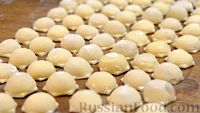

Пельме́ни (ед. ч. пельме́нь) — традиционное блюдо русской кухни в виде термически обработанных изделий из пресного теста
с начинкой из рубленого мяса или рыбы, ведущее своё происхождение с Урала и Сибири.
Рецепт для домашних пельменей

Мука пшеничная просеянная - 500 г + для работы с тестом
Вода горячая (70-75 градусов) - 250 мл
Яйцо (небольшое) - 1 шт.
Соль - 1 ч. ложка без горки
Масло растительное без запаха - 25 мл
Для начинки:
Мясо (говядина и свинина) - 550 г
Лук репчатый - 200 г
Сало (по желанию, если мясо постное) - 30 г
Вода - 70-80 г (по консистенции фарша)
Соль - 1 ч. ложка без горки
Перец чёрный молотый - по вкусу
Виды пельменей
Свои виды этого популярного блюда имеются практически во всех кухнях. Так, например, в Китае они известны под названиями вонтоны, баоцзы, шуй яо или цзяоцзы. В Средней Азии и на Кавказе их именуют манты, момо, хинкали, позы, чувару, манду и чошура. У евреев тоже есть свой аналог этого блюда – креплах. В Крыму его знают, как татараш, а в Италии – равиоли или тортеллини.